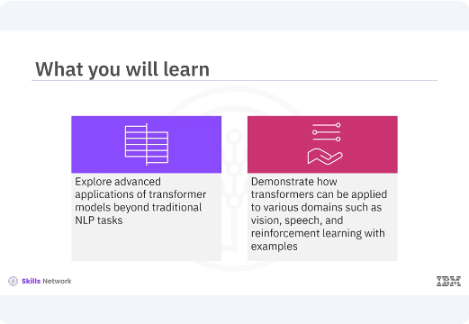
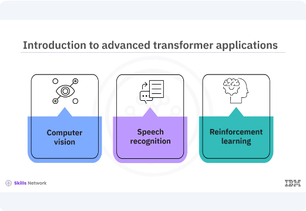
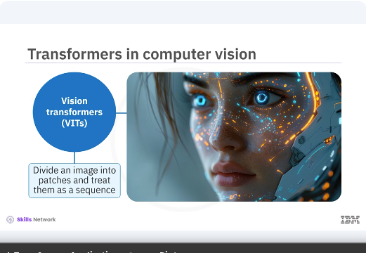
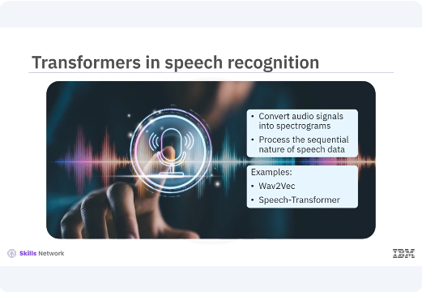
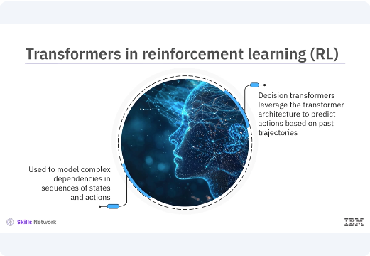

Advanced Transformer Applications

Welcome to this video on advanced transformer applications. After watching this video, you'll be able to explore advanced applications of transformer models beyond traditional NLP tasks. Demonstrate how transformers can be applied to various domains such as vision, speech, and reinforcement learning with examples.

Although transformers have revolutionized the field of natural language processing, their versatile architecture makes them applicable to a wide range of domains including computer vision, speech recognition, and even reinforcement learning.

Let's explore these exciting applications and see how transformers can be adapted to different tasks. Transformers are making significant strides in computer vision. Vision transformers VITs have shown that self attention mechanisms can be applied to image data, often outperforming traditional convolutional neural network CNNs.
VITs divide an image into patches and treat them as a sequence similar to words in a sentence.
pyenv activate venv3.10.4
# Code example: Vision transformer for image classification
import tensorflow as tf
from tensorflow.keras.layers import Layer, Dense, LayerNormalization, Dropout
# Define the TransformerBlock class
class TransformerBlock(Layer):
def __init__(self, embed_dim, num_heads, ff_dim, rate=0.1):
super(TransformerBlock, self).__init__()
self.att = tf.keras.layers.MultiHeadAttention(
num_heads=num_heads,
key_dim=embed_dim
)
self.ffn = tf.keras.Sequential([
Dense(ff_dim, activation="relu"),
Dense(embed_dim),
])
self.layernorm1 = LayerNormalization(epsilon=1e-6)
self.layernorm2 = LayerNormalization(epsilon=1e-6)
self.dropout1 = Dropout(rate)
self.dropout2 = Dropout(rate)
def call(self, inputs, training, mask=None):
attn_output = self.att(inputs, inputs, inputs, attention_mask=mask)
attn_output = self.dropout1(attn_output, training=training)
out1 = self.layernorm1(inputs + attn_output)
ffn_output = self.ffn(out1)
ffn_output = self.dropout2(ffn_output, training=training)
return self.layernorm2(out1 + ffn_output)
In this example, the code snippet defines the core transformer block, which includes a multi head self attention mechanism and a feed forward neural network.
# Code example: Vision transformer for image classification
# Define the PatchEmbedding layer
class PatchEmbedding(Layer):
def __init__(self, num_patches, embedding_dim):
super(PatchEmbedding, self).__init__()
self.num_patches = num_patches
self.embedding_dim = embedding_dim
self.projection = Dense(embedding_dim)
def call(self, patches):
return self.projection(patches)
In this code snippet, in continuation to the previous the patch embedding class embeds image patches into the desired dimension.
# Code example: Vision transformer for image classification
# Define the VisionTransformer model
class VisionTransformer(tf.keras.Model):
def __init__(self, num_patches, embedding_dim, num_heads, ff_dim,
num_layers, num_classes):
super(VisionTransformer, self).__init__()
self.patch_embed = PatchEmbedding(num_patches, embedding_dim)
self.transformer_layers = [
TransformerBlock(embedding_dim, num_heads, ff_dim)
for _ in range(num_layers)
]
self.flatten = Flatten()
self.dense = Dense(num_classes, activation='softmax')
def call(self, images, training):
patches = self.extract_patches(images)
x = self.patch_embed(patches)
for transformer_layer in self.transformer_layers:
x = transformer_layer(x, training=training)
x = self.flatten(x)
return self.dense(x)
def extract_patches(self, images):
batch_size = tf.shape(images)[0]
patches = tf.image.extract_patches(
images=images,
sizes=[1, 16, 16, 1],
strides=[1, 16, 16, 1],
rates=[1, 1, 1, 1],
padding='VALID'
)
patches = tf.reshape(patches, [batch_size, -1, 16*16*3])
return patches
The vision transformer class defines the vision transformer model with patch embedding and multiple transformer layers. The extract patches method extracts patches from images for the transformer model.
# Example usage
num_patches = 196 # Assuming 14x14 patches
embedding_dim = 128
num_heads = 4
ff_dim = 512
num_layers = 6
num_classes = 10 # For CIFAR-10 dataset
vit = VisionTransformer(num_patches, embedding_dim, num_heads, ff_dim, num_layers, num_classes)
images = tf.random.uniform((32, 224, 224, 3)) # Batch of 32 images of size 224x224
output = vit(images)
print(output.shape) # Should print (32, 10)
The example usage demonstrates how to create and use the vision transformer model for image classification. In this example, you have explored the use of transformers in computer vision, specifically through the vision transformer model. By breaking down the model into manageable snippets, the key components are highlighted and demonstrate how they can be used to handle image classification tasks effectively. Transformers are also being used in speech recognition.

By converting audio signals into spectrograms, transformers can process the sequential nature of speech data. Models like Wav2Vec and speech transformer have achieved state of the art performance in speech to text tasks.
# Code example: Transformer in speech recognition
import tensorflow as tf
from tensorflow.keras.layers import Layer, Dense, LayerNormalization, Dropout, Flatten
from tensorflow.keras.models import Model
# Define the TransformerBlock within the same cell
class TransformerBlock(Layer):
def __init__(self, embed_dim, num_heads, ff_dim, rate=0.1):
super(TransformerBlock, self).__init__()
self.att = tf.keras.layers.MultiHeadAttention(
num_heads=num_heads,
key_dim=embed_dim
)
self.ffn = tf.keras.Sequential([
Dense(ff_dim, activation="relu"),
Dense(embed_dim),
])
self.layernorm1 = LayerNormalization(epsilon=1e-6)
self.layernorm2 = LayerNormalization(epsilon=1e-6)
self.dropout1 = Dropout(rate)
self.dropout2 = Dropout(rate)
def call(self, inputs, training, mask=None):
attn_output = self.att(inputs, inputs, inputs, attention_mask=mask)
attn_output = self.dropout1(attn_output, training=training)
out1 = self.layernorm1(inputs + attn_output)
ffn_output = self.ffn(out1)
ffn_output = self.dropout2(ffn_output, training=training)
return self.layernorm2(out1 + ffn_output)
In the example, the speech transformer class defines the speech transformer model with convolutional and transformer layers. First, you define the transformer block within the same cell. The call method applies self attention and feedforward layers with residual connections and layer normalization.
# Define the PatchEmbedding layer
class PatchEmbedding(Layer):
def __init__(self, num_patches, embedding_dim):
super(PatchEmbedding, self).__init__()
self.num_patches = num_patches
self.embedding_dim = embedding_dim
self.projection = Dense(embedding_dim)
def call(self, patches):
return self.projection(patches)
In this code snippet, the patch embedding class defines a layer that embeds self projection patches.
# Define the VisionTransformer model
class VisionTransformer(Model):
def __init__(self, num_patches, embedding_dim, num_heads, ff_dim,
num_layers, num_classes):
super(VisionTransformer, self).__init__()
self.patch_embed = PatchEmbedding(num_patches, embedding_dim)
self.transformer_layers = [
TransformerBlock(embedding_dim, num_heads, ff_dim)
for _ in range(num_layers)
]
self.flatten = Flatten()
self.dense = Dense(num_classes, activation='softmax')
def call(self, images):
patches = self.extract_patches(images)
x = self.patch_embed(patches)
for transformer_layer in self.transformer_layers:
x = transformer_layer(x)
x = self.flatten(x)
return self.dense(x)
def extract_patches(self, images):
batch_size = tf.shape(images)[0]
patches = tf.image.extract_patches(
images=images,
sizes=[1, 16, 16, 1],
strides=[1, 16, 16, 1],
rates=[1, 1, 1, 1],
padding='VALID'
)
patches = tf.reshape(patches, [batch_size, -1, 16 * 16 * 3])
return patches
In this code snippet, you define the vision transformer model class. The extract patches method returns the dimensions of the patches.
# Define the SpeechTransformer model
class SpeechTransformer(Model):
def __init__(self, num_mel_bins, embedding_dim, num_heads, ff_dim,
num_layers, num_classes):
super(SpeechTransformer, self).__init__()
self.conv1 = tf.keras.layers.Conv1D(
filters=embedding_dim,
kernel_size=3,
strides=1,
padding='same',
activation='relu'
)
self.batch_norm = tf.keras.layers.BatchNormalization()
self.reshape = tf.keras.layers.Reshape((-1, embedding_dim))
self.transformer_layers = [
TransformerBlock(embedding_dim, num_heads, ff_dim)
for _ in range(num_layers)
]
self.flatten = tf.keras.layers.Flatten()
self.dense = tf.keras.layers.Dense(num_classes, activation='softmax')
def call(self, spectrograms):
x = self.conv1(spectrograms)
x = self.batch_norm(x)
x = self.reshape(x)
for transformer_layer in self.transformer_layers:
x = transformer_layer(x)
x = self.flatten(x)
return self.dense(x)
In this code, the speech transformer class defines the speech transformer model with convolutional and transformer layers.
# Example usage
num_mel_bins = 80
embedding_dim = 128
num_heads = 4
ff_dim = 512
num_layers = 6
num_classes = 30 # Example for phoneme classification
# Initialize SpeechTransformer model
st = SpeechTransformer(num_mel_bins, embedding_dim, num_heads, ff_dim, num_layers, num_classes)
# Generate example spectrograms
spectrograms = tf.random.uniform((32, 100, num_mel_bins)) # Batch of 32 spectrograms with 100 time frames
# Get model predictions
output = st(spectrograms, training=True)
print(output.shape) # Should print (32, 30), for batch size of 32 and 30 classes
Example usage demonstrates how to create and use the speech transformer model for speech recognition. The speech transformer method generates the spectrograms in batches and frames.

Transformers have found applications in reinforcement learning where they can be used to model complex dependencies in sequences of states and actions. Models like decision transformer leverage the transformer architecture to predict actions based on past trajectories, enabling more efficient learning in complex environments.
# Code example: Decision transformer for RL
from tensorflow.keras.layers import Dense, TimeDistributed
# Define the TransformerBlock class
class TransformerBlock(tf.keras.layers.Layer):
def __init__(self, embed_dim, num_heads, ff_dim, rate=0.1):
super(TransformerBlock, self).__init__()
self.att = tf.keras.layers.MultiHeadAttention(
num_heads=num_heads,
key_dim=embed_dim
)
self.ffn = tf.keras.Sequential([
Dense(ff_dim, activation="relu"),
Dense(embed_dim),
])
self.layernorm1 = tf.keras.layers.LayerNormalization(epsilon=1e-6)
self.layernorm2 = tf.keras.layers.LayerNormalization(epsilon=1e-6)
self.dropout1 = tf.keras.layers.Dropout(rate)
self.dropout2 = tf.keras.layers.Dropout(rate)
def call(self, inputs, training, mask=None):
attn_output = self.att(inputs, inputs, inputs, attention_mask=mask)
attn_output = self.dropout1(attn_output, training=training)
out1 = self.layernorm1(inputs + attn_output)
ffn_output = self.ffn(out1)
ffn_output = self.dropout2(ffn_output, training=training)
return self.layernorm2(out1 + ffn_output)
In this example, you first define the transformer block class. The call method applies the self attention and feedforward outputs for the transformer layer.
# Define the DecisionTransformer model
class DecisionTransformer(tf.keras.Model):
def __init__(self, state_dim, action_dim, embedding_dim, num_heads,
ff_dim, num_layers):
super(DecisionTransformer, self).__init__()
self.state_embed = Dense(embedding_dim, activation='relu')
self.action_embed = Dense(embedding_dim, activation='relu')
self.transformer_layers = [
TransformerBlock(embedding_dim, num_heads, ff_dim)
for _ in range(num_layers)
]
self.dense = TimeDistributed(Dense(action_dim))
def call(self, states, actions, training=True):
state_embeddings = self.state_embed(states)
action_embeddings = self.action_embed(actions)
x = state_embeddings + action_embeddings
for transformer_layer in self.transformer_layers:
x = transformer_layer(x, training=training)
return self.dense(x)
In the example, the decision transformer class defines the decision transformer model for reinforcement learning. The call method applies the embeddings for the transformer layer.
# Example usage
state_dim = 20
action_dim = 5
embedding_dim = 128
num_heads = 4
ff_dim = 512
num_layers = 6
# Initialize DecisionTransformer model
dt = DecisionTransformer(
state_dim,
action_dim,
embedding_dim,
num_heads,
ff_dim,
num_layers
)
# Generate example states and actions
states = tf.random.uniform((32, 100, state_dim))
# Batch of 32 sequences of 100 states
actions = tf.random.uniform((32, 100, action_dim))
# Get model predictions
output = dt(states, actions, training=True)
print(output.shape)
# Should print (32, 100, 5) for batch size 32, sequence length 100, and action dimension 5
The example usage demonstrates how to create and use the decision transformer model for action prediction based on past trajectories.
In this video, you transformers versatile architecture makes them applicable to a wide range of domains including computer vision, speech recognition, and even reinforcement learning. Vision transformers VITs have shown that self attention mechanisms can be applied to image data. By converting audio signals into spectrograms, transformers can process the sequential nature of speech data. Transformers have found applications in reinforcement learning where they can be used to model complex dependencies and sequences of states and actions.